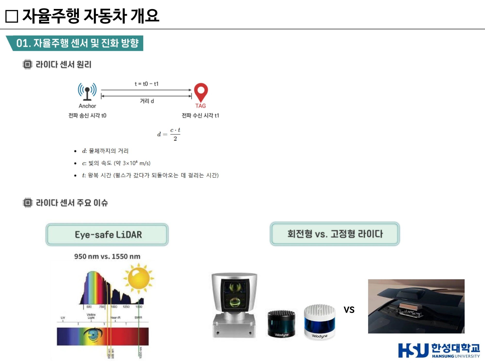
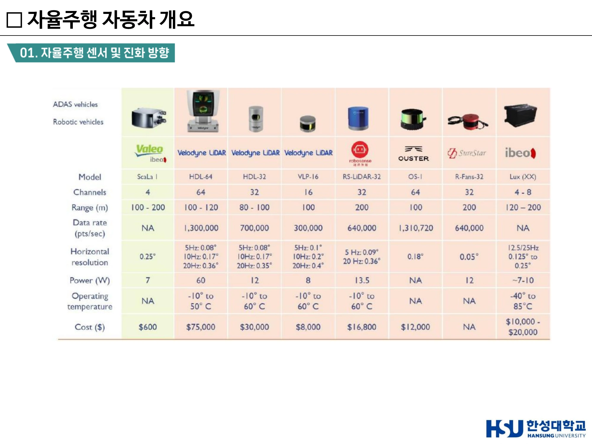
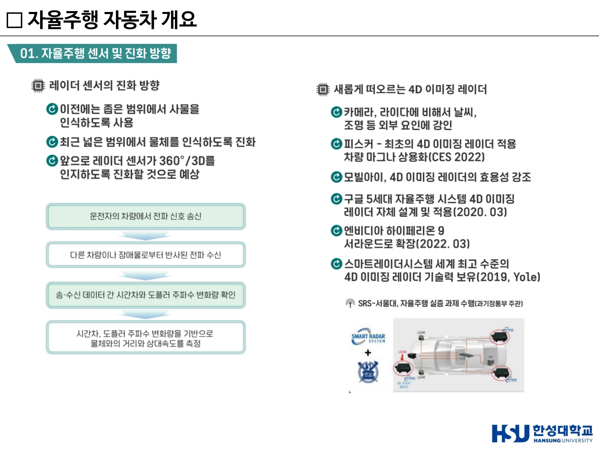
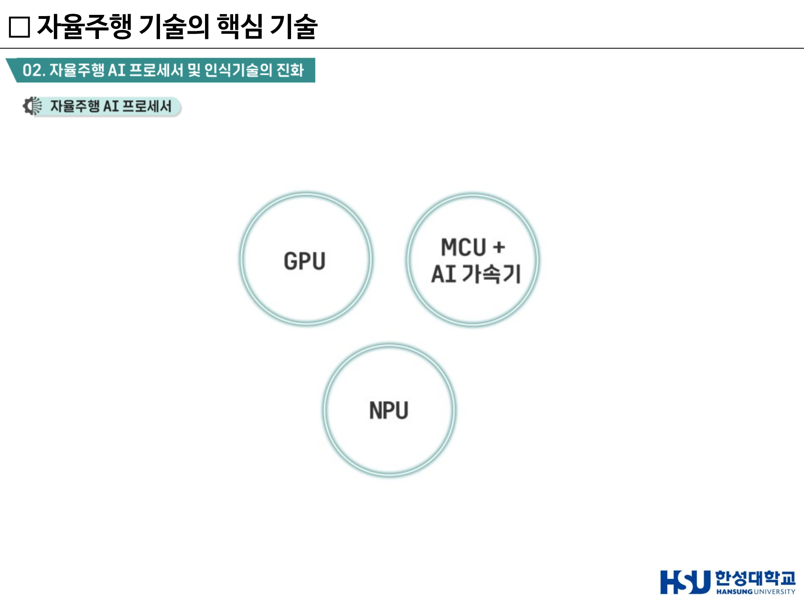
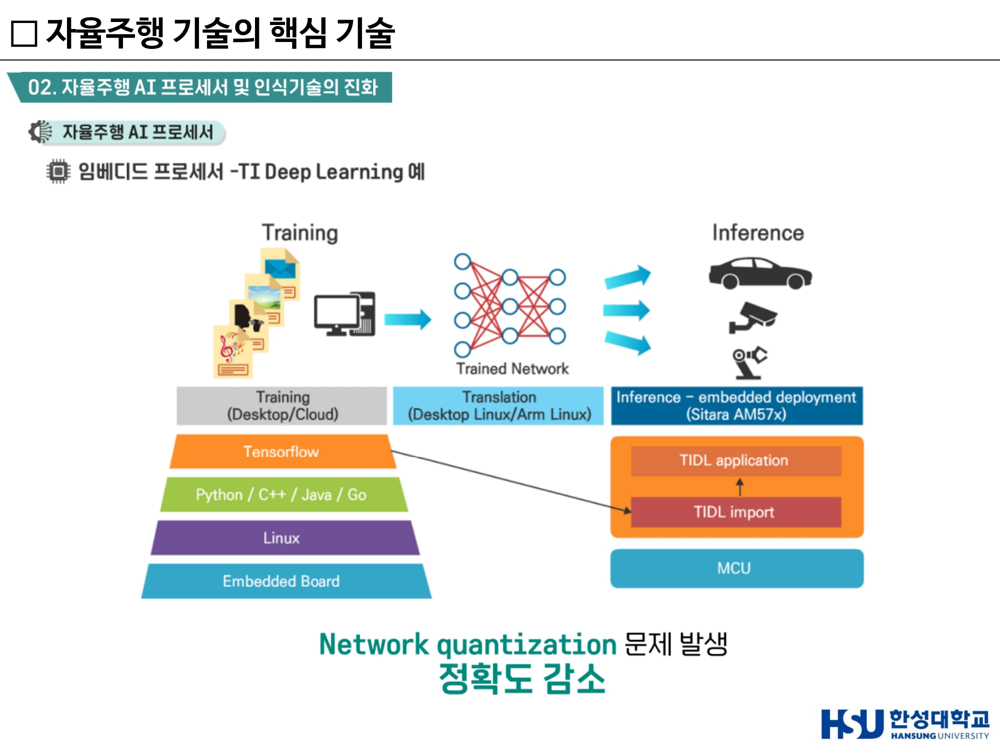

6주차 · 센서의 진화와 AI 프로세서¶
🔗 강의 흐름 — 5주차에서 "센서 성능이 아니라 비용 대비 성능"이라고 했다. 이번 주는 그 말의 근거를 센서별 물리 원리와 가격표로 확인하고, 경쟁의 무게중심이 왜 AI 반도체로 넘어갔는지 본다. 센서별 비교와 센서 퓨전이 이 주차의 핵심이다.
학습목표 — 카메라·라이다·레이더·열화상·SWIR 센서의 물리적 원리와 장단점을 비교하고, 각 센서의 진화 방향을 설명하며, 자율주행 AI 프로세서의 성능 지표와 시장 구도를 설명할 수 있다.
💡 기초 다지기 — 센서는 각각 "보는 방식"이 다르다. 카메라는 빛(색·형태), 라이다는 레이저의 왕복 시간(거리·3D), 레이더는 전파와 도플러(거리·속도), 열화상은 온도. 그래서 하나가 실패하는 상황에서 다른 하나가 살아남는다. 이것이 센서 퓨전의 존재 이유다.
🗺️ 한눈에 보는 개념도¶
flowchart TB
subgraph SENSOR["센서 3형제 — 각각 장단점이 있음"]
C["카메라<br/>렌즈로 시각적 인식"]
L["라이다<br/>빛 반사 시간으로 거리"]
R["레이더<br/>전자기파로 거리·속도"]
end
C --> F["센서 퓨전"]
L --> F
R --> F
F --> P["AI 프로세서<br/>GPU / NPU / MCU+가속기"]
P --> D["인식 결과"]
L -.3D 입체 지도 구현.-> L
R -.날씨 영향 거의 없음.-> R1. 주요 자율주행 센서 3종¶
| 센서 | 원리 | 강점 |
|---|---|---|
| 카메라(Camera) | 렌즈를 통해 시각적으로 주변 사물·상황 인식 | 색·문자·형태(신호등, 표지판, 차선) |
| 라이다(Lidar) | 빛(레이저)이 반사되는 시간으로 거리 측정 | 3D 입체 지도 구현 가능 |
| 레이더(Radar) | 전자기파 송수신을 통한 거리·속도 측정 | 날씨 등 외부환경 영향 거의 없음 |
레이더, 라이다, 카메라 — 각각 장단점이 있다. 그래서 센서 퓨전이 필요하다.
센서 시스템의 진화 3축
- 라이다 vs 스테레오 카메라 — 3D 인식, 처리속도, 환경 등에서 차이. 다양한 참조 모델이 진화 중
- 라이다 센서의 저가화 — 관련 기술의 발달, 고정형 라이다 상용화 가시화
- 레이더 기술의 진화 — 3D 레이더 기술
2. 카메라¶
- ADAS 시장에서 이미 핵심 센서로 발전했고, 모든 자율주행 차량 제조사가 카메라를 필수 센서로 채택·탑재한다.
- 종류: 전방 카메라 / 스테레오 카메라 / 어라운드 뷰 카메라 / 운전자 모니터링 카메라
- 탑재 수: 초기 1~3개 구조 → 중장기 8~14개 구조
노출의 3요소 (카메라 요구 사양의 기초)¶
| 요소 | 정의 |
|---|---|
| 조리개(Aperture) | 카메라 렌즈에서 빛의 양을 조절하는 장치 (f/1.4 ~ f/22) |
| 셔터 속도(Shutter Speed) | 설정한 시간만큼 열리고 닫히며 노출 시간을 조정하여 빛의 양을 조절 (1/1000s ~ 1/4s) |
| 감도(ISO) | 이미지 센서가 조리개와 셔터를 거쳐 노출된 빛을 증폭할 수준 (ISO 50 ~ 25600, 높을수록 노이즈↑) |
자율주행용 카메라의 요구 사양¶
- 카메라 설치 위치 최적화 — 시야각과 사각지대를 고려한 배치
- 슈도 라이다(Pseudo-LiDAR) — 카메라 기반의 3D 인식 데이터를 LiDAR처럼 표현한 기술, "가짜 LiDAR". 스테레오 카메라로 3D 인식을 구현
- 조명 변화에 대한 내구성 — 터널, 역광, 밤 시간대 등 → 향후 조리개 조절 기능에 대한 고려
- 날씨 조건에 대한 문제 — 악천후
카메라의 진화 기술¶
| 기술 | 내용 |
|---|---|
| 조리개 자동 조절 | 자동 조리개 조절이 되는 트랜센드 블랙박스 |
| HDR (High Dynamic Range) | 명암비가 큰 장면에서 밝은 곳과 어두운 곳을 동시에 표현 |
| 센서 떨림 보정 | 센서 시프트 / 렌즈 시프트 방식 |
| 센서 클리닝 | dlhBOWLES의 라이다 클리닝 시스템 |
열화상 카메라와 SWIR¶
- 열화상 카메라 — 온도 인지로 사람/동물/차량 등의 야간 인지 가능. 예: 열화상 카메라 '바이퍼(Viper)'
- SWIR 카메라 (이스라엘 TriEye) — 저비용 단파장 적외선 이미징 솔루션. CMOS 기반 이미지 센서에 SWIR 기능 구현 → 악천후 이미징, 야간 이미징, 원격 물질 감지, 1000배 낮은 가격, 저전력, 고해상도
온도로 보는 센서 — 열화상 카메라
온도를 감지하여 야간에도 사람·동물·차량을 인식하는 센서는 열화상 카메라다. 4D 이미징 라이다 · 이벤트 카메라 · SWIR 센서와는 원리가 다르다.
3. 라이다 (LiDAR)¶
원리¶
$$d = \frac{c \cdot t}{2}$$
- d — 물체까지의 거리
- c — 빛의 속도 (약 3×10⁸ m/s)
- t — 왕복 시간 (펄스가 갔다가 되돌아오는 데 걸리는 시간)
→ 왕복이므로 2로 나눈다는 점이 핵심이다.
라이다의 장점과 한계¶
| 구분 | 내용 |
|---|---|
| ✅ 장점 | 레이저 신호가 반사되어 돌아오는 시간을 이용해 거리를 측정한다 / 3D 인식이 가능하여 주변 환경을 정밀하게 파악할 수 있다 |
| ❌ 한계 | 오염에 민감하기 때문에 클리닝 시스템이 필요한 경우가 있다 / 안개·비·눈에서는 성능이 저하된다 / 고가 |
라이다의 한계 — 자주 오해하는 점
라이다가 안개·비·눈에서도 정확한 성능을 유지한다는 것은 사실이 아니다. 악천후에 강한 센서는 레이더다.
라이다 주요 이슈¶
① Eye-safe LiDAR — 950nm vs 1550nm
| 파장 | 특징 |
|---|---|
| 950nm | 기존 주류. 출력을 높이면 눈에 위험 |
| 1550nm | 출력이 높아져도 사람의 눈에 흡수되지 않아 안전. 다만 양산 비용과 소모 전력이 상대적으로 높음 |
② 회전형 vs 고정형 라이다 — 고정형으로의 진화
| 방식 | 용도 |
|---|---|
| Flash | 근거리, 작은 기기 (드론, 스마트폰) |
| MEMS | 차량용 ADAS, 로봇 (균형 잡힌 성능) |
| OPA | 미래형 고정형 라이다, 군사/자율주행차 |
③ VCSEL (Vertical Cavity Surface Emitting Laser) — Apple 아이폰X에 Face ID 기능을 위해 처음으로 도입된 광원. 라이다 소형화·저가화의 열쇠.
④ 고정형 라이다와 양산을 위한 진화 (CES 2022)
- 우리나라 — SOS랩, 카네비컴 등
- 해외 — 루미나, 발레오, 이노비즈, 헤사이, 로보센스 등
라이다 제품 비교 (대표 사양)¶
| 모델 | 채널 | 측정거리 | 가격 |
|---|---|---|---|
| Valeo ScaLa I (ADAS) | 4 | 100~200m | $600 |
| Velodyne HDL-64 | 64 | 100~120m | $75,000 |
| Velodyne HDL-32 | 32 | 80~100m | $30,000 |
| Velodyne VLP-16 | 16 | 100m | $8,000 |
| RoboSense RS-LiDAR-32 | 32 | 200m | $16,800 |
| Ouster OS-1 | 64 | 100m | $12,000 |
| ibeo Lux | 4~8 | 120~200m | $10,000~20,000 |
이 표가 말하는 것
양산용 ADAS 라이다(ScaLa I, $600)와 연구용 고성능 라이다(HDL-64, $75,000)의 가격 차이가 100배다. 5주차의 "비용 대비 성능 최적화"가 무슨 뜻인지 이 표 하나로 설명된다.

▲ 라이다 센서 원리(d = c·t/2), eye-safe 파장 950nm vs 1550nm, 회전형 vs 고정형 (출처: 6주차 슬라이드 p16)

▲ 라이다 제품 비교 원본 표 — Valeo ScaLa I $600 vs Velodyne HDL-64 $75,000, 채널·측정거리·해상도·가격 (출처: 6주차 슬라이드 p17)
4. 레이더 (Radar)¶
동작 순서¶
- 운전자의 차량에서 전파 신호 송신
- 다른 차량이나 장애물로부터 반사된 전파 수신
- 송·수신 데이터 간 시간차와 도플러 주파수 변화량 확인
- 시간차·도플러 변화량 기반으로 물체와의 거리와 상대속도를 측정
진화 방향¶
- 이전에는 좁은 범위에서 사물을 인식하도록 사용
- 최근 넓은 범위에서 물체를 인식하도록 진화
- 앞으로 레이더 센서가 360°/3D를 인지하도록 진화할 것으로 예상
4D 이미징 레이더¶
"4D" = 거리·방위각·고도(3D) + 속도. 카메라·라이다에 비해 날씨, 조명 등 외부 요인에 강인하다.
| 기업 | 내용 |
|---|---|
| 피스커 | 최초의 4D 이미징 레이더 적용 차량 마그나 상용화 (CES 2022) |
| 모빌아이 | 4D 이미징 레이더의 효용성 강조 |
| 구글 | 5세대 자율주행 시스템에 4D 이미징 레이더 자체 설계 및 적용 (2020.03) |
| 엔비디아 | 하이페리온 9 — 서라운드로 확장 (2022.03) |
| 스마트레이더시스템(SRS) | 세계 최고 수준의 4D 이미징 레이더 기술력 보유(2019, Yole). 서울대와 자율주행 실증 과제 수행(과기정통부 주관) |

▲ 레이더 센서의 진화 방향과 4D 이미징 레이더 — 거리·방위각·고도 + 속도 (출처: 6주차 슬라이드 p19)
5. 센서 클리닝 시스템¶
라이다·카메라는 오염에 취약하다. 실제 상용화를 위해서는 닦는 기술이 필요하다.
| 기업 | 방식 |
|---|---|
| 구글 웨이모 (2017) | 라이다 센서에 일반 자동차와 비슷하게 와이퍼 추가 |
| 발레오 (2018 파리모터쇼) | 에버뷰 센트리캠(EverView Centricam) — 센서를 감싼 덮개가 고속으로 회전하면서 물을 떨어내 센서를 보호 |
| dlhBOWLES (CES 2019) | 라이다 센서에 묻은 먼지·흙탕물을 물로 클리닝하는 시스템 |
| 마이크로시스템 | 액체 자가세정 유리(Liquid self-cleaning glass) — 소수성 층 + 유전체 층 + 전극으로 물방울을 진동시켜 먼지 제거 |
6. 센서 진화 방향 — 6가지 요약¶
"카메라, 라이다, 레이더 — 센서의 조합"
- 360도 인식을 위한 진화
- 3D 인식을 위한 진화
- Worst case / Edge case 인식을 위한 진화
- 대량 양산 및 상용화를 위한 진화
- 클리닝 시스템 필요
- 프로세서 / SW 융합 필요
7. 자율주행 AI 프로세서¶
프로세서의 세 갈래¶
GPU / NPU / MCU + AI 가속기
→ 특히 Level 2/3에서는 임베디드 프로세서가 중요하다.

▲ 자율주행 AI 프로세서의 세 갈래 — GPU / NPU / MCU + AI 가속기 (출처: 6주차 슬라이드(덱 10) p3)
딥러닝의 3단계 흐름¶
flowchart LR
T["① Training (학습)<br/>Desktop/Cloud<br/>TensorFlow · Python/C++/Java · Linux"]
--> X["② Translation (변환)<br/>Desktop Linux / Arm Linux<br/>임베디드 환경용 모델 경량화"]
--> I["③ Inference (추론)<br/>Embedded deployment<br/>TIDL on MCU"]| 단계 | 내용 |
|---|---|
| Training | 이미지·모션·소리 데이터로 컴퓨터에서 딥러닝 모델을 학습. TensorFlow, Python/C++/Java, Linux |
| Translation | 학습된 모델을 그대로 쓰지 않고 임베디드 환경(ARM, 리눅스)에서 돌아가게 변환. PC와 임베디드 보드는 성능이 완전히 다르므로 "가볍게, 빠르게" 바꾸는 과정 |
| Inference | 자동차·카메라·로봇에서 실제로 AI가 판단하는 단계. TIDL(TI Deep Learning)로 MCU에서 실행 |
Network quantization 문제 발생 → 정확도 감소
모델을 경량화(부동소수점 → 정수)하는 과정에서 정확도가 떨어지는 문제가 생긴다. 이것이 임베디드 AI의 핵심 난제다.
성능 지표 — GFLOPS vs TOPS¶
| 지표 | 의미 |
|---|---|
| GFLOPS (Giga Floating Point Operations per Second) | 초당 부동소수점 연산 횟수 — 실수 연산 성능(정밀 계산). FLOAT32/FLOAT64 기준 |
| TOPS (Tera Operation Per Second) | 초당 정수 연산 횟수 — AI 추론 성능 |
정밀도 FLOAT64 > FLOAT32 > INT16 속도/전력 INT16 > FLOAT32 > FLOAT64
→ AI 추론은 정밀도를 조금 희생하고 속도·전력을 얻는 방향으로 간다. 그래서 TOPS가 지표가 된다.
딥러닝 프로세서 성능 비교¶
| 기업 | 제품 | 성능 |
|---|---|---|
| NVIDIA | 재비어 SoC | 30 TOPS / 30W |
| 드라이브 PX 페가수스 | 320 TOPS / 300W | |
| 오린 플랫폼(2023) | 최대 254 TOPS / 100W | |
| Thor (GTC 2022) | 2000 TOPS | |
| Tesla | FSD computer | (144 TOPS 급) |
| Horizon Robotics | Journey 5 | 30 TOPS / 30W 급 |
| 퀄컴 | 스냅드래곤 라이드 (CES 2020) | 700 TOPS / 130W |
| 모빌아이 | EyeQ ULTRA | 176 TOPS (2025년 예정) |
NVIDIA Drive Thor (GTC 2022) — HYPERION 8 SENSORS: 2.5 G sample/sec, 750 TOPs ×3 / HYPERION 9 SENSORS: 4.2 G sample/sec, 2000 TOPs ×2
Qualcomm Snapdragon Ride Vision SoC — 업계 선도 4nm SoC. Hexagon Processor, Kryo CPU, Embedded Vision Accelerator, Spectra ISP, Video Processor(VPU), Secure Processor, Safety Island. Arriver 협력 발표.
기업과 제품을 짝지어 기억한다
고성능 자율주행 프로세서를 만드는 곳은 퀄컴 · 엔비디아 · 모빌아이다. 루미나는 라이다 업체이며 프로세서 제조사가 아니다.
또한 임베디드 AI 프로세서는 연산량 최적화가 필요하고, 빠른 처리 속도가 요구되며, 양자화 이슈가 발생한다. 전력 소모에 제약이 없다는 것은 사실이 아니다.

▲ Training → Translation → Inference 흐름과 Network quantization으로 인한 정확도 감소 문제 (출처: 6주차 슬라이드(덱 10) p6)
8. 프로세서 경쟁 구도 — 모빌아이 / 퀄컴 / 엔비디아¶
모빌아이의 전략¶
- 플랫폼 두 가지 — camera only platform / with LiDAR platform
- 특징: 정밀 지도 / 자율주행 센서(라이다·카메라) 직접 개발 / 자율주행 처리 소프트웨어 직접 개발
- 전략: 자율주행 솔루션 + 정밀 지도 + 센서를 묶어서 납품
- REM Cloud-enhanced ADAS, Volkswagen — 자체 기술이 탑재된 약 100만 대의 차량을 활용해 데이터를 크라우드소싱하여 고화질 지도 구축
시장 구도¶
기존 ADAS 시장 — 사실상 모빌아이 독점(데이터 독점) 자율주행 시장에서 자동차사의 모빌아이 견제 → 엔비디아/퀄컴 등과 협력
카메라 기반 인식 솔루션 — 스트라드비전(STRADVISION)¶
기존 레벨 2, 3 정도의 자율주행 프로세서에 AI 가속기를 붙인 형태의 경량 인식 소프트웨어에서 많은 시장을 장악.
9. 자율주행 데이터셋¶
| 데이터셋 | 출처·특징 |
|---|---|
| KITTI | KIT(Karlsruhe Institute of Technology) 발표 (2012.03). 카메라·라이다·GPS 등 사용. 이미지 당 최대 15대의 자동차와 30명의 보행자. 홈페이지에서 별도의 오픈소스는 제공하지 않음 |
| KITTI-360 | KITTI 데이터에서 조금 더 진화한 데이터셋 |
| nuScenes | 현대자동차와 Aptiv의 합작법인 모셔널이 공개한 멀티모달 데이터셋 (2019.03). 카메라·레이더·라이다 데이터셋 조합. 차들이 운행했던 도시(Boston Seaport, Singapore One North)의 정밀 지도 제공 |
| BDD100K | 미국 버클리대에서 만든 데이터셋 |
| Waymo | 웨이모 공개 데이터셋 |
| TuSimple | 자율주행 트럭 업체 TuSimple 제작 |
| Cirrus | 볼보에서 제작 (2021.02). 루미나와 함께. 정밀 지도 제공 |
| KODAS | 우리나라 국토정보공사에서 만든 데이터셋 |
딥러닝 vs 비 딥러닝 알고리즘 비교 (KITTI dataset, Vehicle 기준)
| 방식 | 방법 | 연도 | Vehicle |
|---|---|---|---|
| Deep Learning | Multi-Task CNN and ROI | 2018 | 91.67% |
| RRC (Recurrent Rolling Convolution) | 2017 | 90.19% | |
| SubCNN | 2017 | 88.86% | |
| SDP+RPN | 2016 | 89.42% | |
| Non-Deep Learning | AOG (Hierarchical And-Or model) | 2016 | 75.94% |
| SubCat | 2015 | 75.46% | |
| 3DVP (3D Voxel Pattern) | 2015 | 75.77% |
→ 딥러닝과 비딥러닝의 격차가 약 15%p. 이것이 자율주행이 딥러닝으로 넘어간 이유다.
10. 센서 데이터 인식¶
| 센서 | 인식 방식 |
|---|---|
| Camera 기반 | 차선 인식 / 객체 인식 알고리즘 → 객체 추적(Object tracking) |
| 라이다 기반 | Deep learning 기반 알고리즘(연구용) — Input Original Data(.pcd) → RoI Filtering → Ground Removal Algorithm → Clustering |
| 레이더 기반 | 전자파 신호를 이용한 객체 인식 / 4D Imaging Radar → 라이다 기반 인식과 유사하게 사용 |
| 센서 퓨전 | 센서 데이터 융합 — 카메라/라이다/레이더 융합. KITTI 사례(Camera + LiDAR), nuScenes 사례(Camera + LiDAR + Radar) |
주행 예측 (Prediction)¶
보행자의 의도 파악을 통한 주행 보조 / 주변 차량의 의도 파악
| 과제 | 내용 |
|---|---|
| 순환적 인공지능 학습 데이터 구조 설계 | 인공지능 기술을 활용하여 데이터의 선별·라벨링·배포를 자동화하는 기술 필요 |
| 데이터 수집 체계 설계 | 대규모 자율주행 데이터를 효율적으로 수집·관리할 수 있는 체계 필요 |
| 센서 가상화 및 시뮬레이터 설계 | 실사와 같은 디지털 트윈 생성 기술 필요. 실도로에서 획득하기 힘든 상황을 모사하여 시뮬레이션 데이터 생성 가능 |
🤔 생각해 봅시다¶
시나리오 분석 "짙은 안개가 낀 야간 고속도로에서 선행 트럭 뒤에 정지 차량이 있는 시나리오" — 각 센서가 기여하는 바와 한계를 센서 퓨전 관점에서 논하시오.
| 센서 | 이 시나리오에서의 기여 | 한계 |
|---|---|---|
| 카메라 | 차선·트럭 후미등 인식 | 야간 + 안개에서 인지 성능이 급격히 저하. 선행 트럭에 가려 정지 차량 미인지 |
| 라이다 | 3D 형상·거리 정밀 | 안개에서 산란으로 성능 저하 |
| 레이더 | 날씨 영향 거의 없음, 거리·상대속도 직접 측정. 트럭 아래로 반사되어 선행차 너머 감지 가능 | 해상도 낮음, 객체 종류 구분 어려움 |
| 초음파 | 근거리 주차 보조 | 고속 주행에는 부적합(8m 수준) |
| 이벤트 카메라 | 밝기 변화만 감지 → 고속·저지연 | 절대 밝기 정보 없음 |
| 열화상 | 온도로 사람·동물·엔진 열원 감지 → 야간에 유효 | 열 대비가 없는 물체는 약함 |
→ 결론: 레이더 + 열화상이 이 시나리오의 주력, 카메라·라이다는 보조. 그리고 V2X(7주차)가 있다면 선행 트럭이 정지 차량 정보를 직접 전송해 줄 수 있다.
✅ 이번 주 체크리스트¶
- 카메라·라이다·레이더의 원리와 대표 강점을 한 줄씩 말할 수 있다
- 라이다 거리 공식 d = c·t/2를 쓸 수 있다
- 1550nm이 eye-safe인 이유와 단점을 안다
- Flash/MEMS/OPA의 용도 차이를 안다
- GFLOPS와 TOPS의 차이를 설명할 수 있다
- 루미나가 프로세서 회사가 아니라는 것을 안다
▶️ 다음 주 예고 — 센서만으로는 인지할 수 없는 것을 통신으로 확보한다. V2X 4유형, DSRC, MEC, 5G. 그리고 7단계 공학 설계 프로세스를 실제 공모전 사례로 익힌다. → 7주차